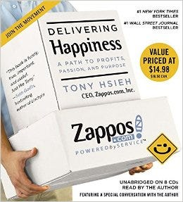
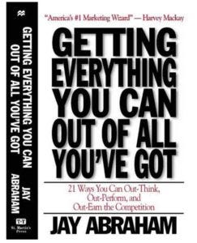

10 Letture fondamentali per il Customer Service
Dopo la pausa estiva è opportuno ricominciare a pensare alla gestione del proprio proprio Customer Service con un argomento leggero ma valido: 10 letture fondamentali per il miglioramento del Customer Service.
Quando si tratta di migliorare e arricchire noi stessi e le nostre vite, non c’è investimento migliore che comprare un libro.
Quale altro investimento offre un accesso diretto alle conoscenze di qualcuno che è diventato esperto in un campo specifico dedicandogli anni della sua vita, studi e ricerche?
Per diventare esperti in un campo nel quale ci si è appena immersi, trovare il miglior libro relativo a quell’argomento stesso è la cosa migliore che si possa fare.
Nella lista seguente la cosa che più salta all’occhio è che nessuno di questi ha Customer service nel titolo. Di fatto molti dei libri dal titolo simile non hanno dei validi contenuti, né relativamente al campo specifico né per l’acquisizione di conoscenze generiche aggiuntive.
Ci sono invece tanti libri che, apparentemente, non hanno nulla a che vedere con il Customer Service ma che possono rivoluzionare il modo in cui ci si approccia ai clienti.
Ecco la lista dei 20 libri da leggere per migliorare il proprio Customer service
1) Come trattare gli altri e farseli amici di Dale Carnegie
Questo è il libro che più di ogni altro aiuta ad andare d’accordo con gli altri nel lavoro e nella vita privata, e che dovrebbe essere letto da chiunque abbia un ruolo attivo nel campo del Customer Service.
Le rivelazioni di Carnegie su ciò che è in grado di muovere le persone nel profondo e su come questo qualcosa possa effettivamente essere utilizzato per renderle felici ed ottenere ciò che si vuole da loro, sono tanto importanti oggi quanto lo erano quando vennero pubblicate, nel 1937.
“Quando trattiamo con la gente, ricordiamo che non stiamo trattando con persone dotate di sola logica. Noi stiamo trattando con creature dotate di emozioni, creature agitate da pregiudizi e motivate dalla superbia e dalla vanità.”
2) La spinta gentile. La nuova strategia per migliorare le nostre decisioni su denaro, salute, felicità di Richard Thaler e Cass Sunstein.
Se vuoi imparare come influenzare le scelte dei tuoi clienti e come indurli a dare un maggior valore ai tuoi prodotti, questo è il libro che fa per te.
Tramite la teoria dei Nudge (ovvero delle spinte gentili) i due autori spiegano come tramite questa si possano indurre comportamenti specifici in ciascun individuo.
“Per far perdere peso alla gente una strategia efficace sarebbe mettere degli specchi nelle caffetterie.”
3) Detto, fatto! Di David Allen
La gestione del Customer Service richiede una notevole capacità di coordinazione delle tempistiche, del personale e di tutti quei fattori che entrano in gioco nel rapporto tra l’azienda e il cliente. È facile che, dato il compito complesso, ci si lasci prendere da stress e comportamenti emotivi. I software di Help Desk possono senza dubbio aiutare, ma in questo libro è possibile trovare la chiave della produttività libera da stress.
“La maggior parte delle persone è più produttiva nel proprio lavoro la settimana prima di andare in vacanza, ma non è certo per la vacanza in sé. Cos’è che si fa l’ultima settimana prima di partire per un lungo viaggio? Si mette ordine, si chiudono delle scadenze, si fa chiarezza sui propri obiettivi e si rivedono i termini degli accordi presi con se stessi e con gli altri. Suggerisco che ciò venga fatto settimanalmente, invece che annualmente.”
4) Delivering Happiness di Tony Hsieh

Non c’è nessun caso di studi che rispecchi maggiormente l’idea di come il Customer Service possa portare un’azienda ad un successo inaspettato più di quanto non abbia fatto con Zappos.
Pare addirittura che tutti i clienti di Zappos abbiano un aneddoto su quanto il personale del Customer Service dell’azienda possano averli positivamente stupiti.
Questo libro, scritto dal CEO dell’azienda, racconta come e perché il Customer Service ha avuto tanta importanza per questa azienda e fornisce innumerevoli spunti su come possa essere ripensato il rapporto tra azienda e cliente.
“Nel corso degli anni, il primo punto di forza della nostra crescita a Zappos sono stato i clienti fedeli e il passaparola. La nostra filosofia è stata quella di prendere la maggior parte del denaro che avremmo investito per la pubblicità a pagamento e di investirlo, invece, nel Customer Service e nella Customer Experience, lasciando che fossero i nostri clienti a fare marketing per noi attraverso il passaparola.”
5) Il vantaggio della felicità di Shawn Achor
Essere positivi è una delle caratteristiche più importanti per la gestione del Customer Service e può determinare una effettiva rivalutazione dell’azienda da parte dei clienti. Questo libro vi insegnerà dei metodi studiati da un punto di vista scientifico dal team di Achor che promettono di rendere il lettore più felice e più ottimista nel tempo, cosa che avrà una notevole ricaduta in positivo sulla produttività, la performance lavorativa, e migliori relazioni con i clienti.
“Gli studenti ai quali è stato detto di pensare al giorno più bello della loro vita proprio prima di fare un test di matematica hanno avuto risultati migliori dei loro colleghi. E quelle persone che hanno espresso emozioni positive mentre negoziavano un affare hanno avuto risultati più efficienti di quelli che dimostravano emozioni neutrali o negative.”
6) Checklist, come fare andare meglio le cose di Atul Gawande
Quando tanti clienti inviano e-mail dai vari livelli di priorità la cui gestione spetta a più di un team, il funzionamento del Customer Service può diventare piuttosto caotico.
Quando le cose diventano confuse e caotiche le possibilità che dei dettagli fondamentali vengano smarriti aumentano a dismisura. In questo libro Gawande, rinomato chirurgo, ci racconta alcune storie incredibili su come le checklist, un concetto dalla semplicissima applicazione, salvino ogni anno milioni di vite negli ospedali. In realtà le checklist possono essere utilizzate per rendere a prova di rischio qualunque tipo di processo o sistema, e grazie a questo libro è facile imparare come.
“A molti non piacciono le checklist. Devono essere scrupolose, non sono molto divertenti. Ma il problema non è relativo alla semplice pigrizia…è come se fossimo costretti ad usare una forma di controllo su noi stessi che ci provoca imbarazzo. Si va infatti contro la convinzione profondamente radicata che chi è veramente ingamba tra di noi — o aspira ad esserlo- può gestire persino le situazioni di maggiori complessità. Ma le persone così definite ingamba sono audaci, improvvisano. Non hanno protocolli o liste di controllo. Forse la nostra idea di eroismo deve essere aggiornata.”
7) La mucca viola. Farsi notare (e fare fortuna) in un mondo tutto marrone di Seth Godin
Quasi tutte le aziende all’inizio cercano di farsi notare, ma già dopo pochi anni si conformano alle aziende più anziane presenti sul mercato.
Cosa determina questo fallimento nel volersi distinguere?
Questo libro cerca di risolvere questo mistero e da un’importanza fondamentale al pensarla in modo diverso e volersi differenziare dagli altri. E nella scelta di essere riconoscibili, il Customer Service dovrebbe riflettere sempre questa intenzione.
“In un mercato affollato, uniformarsi è fallire. In un mercato affollato non emergere è uguale ad essere invisibili”
8) Drive. La sorprendente verità su ciò che ci motiva nel lavoro e nella vita di Daniel H. Pink
Questo è uno dei libri più efficaci nel motivare che siano mai stati pubblicati negli ultimi dieci anni.
Se vuoi motivare il tuo team perché offra un validissimo servizio di assistenza clienti (e la cosa non ha a che fare con il budget a disposizione), o hai bisogno di motivare i tuoi clienti a scriverti per chiedere aiuto (e la cosa non ha a che fare con il referral né con il gamification), Daniel Pink ti insegnerà ciò che serve sapere sul capire cos’è che fa si che le persone compiano azioni specifiche.
“Il problema del fare del premio l’unica obiettivo che conta è che alcune persone sceglieranno il percorso più veloce per raggiungerlo, anche se ciò significa prendere una scorciatoia. In effetti, la maggior parte degli scandali e comportamenti scorretti che sono radicati nei comportamenti della vita moderna coinvolgono le scorciatoie.”
9) I quarantanove racconti di Ernest Hemingway
Saper scrivere è molto importante nel Customer Service: scrivere con chiarezza rende più facile comunicare con i clienti, che sono più soddisfatti e inclini all’interazione con l’azienda. Mentre esistono moltissimi libri ricchi di consigli su come fare a scrivere bene, è consigliabile leggere quei libri che sonodavvero scritti bene.
Una scrittura chiara e scorrevole è indubbiamente quella che troviamo in tutte le opere di Hemingway. Lui sapeva come rendere ogni singola frase piena di brio utilizzando un linguaggio positivo, variegato e deciso.
“Tu potresti parlare. Io potrei ascoltare. Ed un miracolo potrebbe accadere.”
10) Ottieni tutto quello che puoi con quello che hai già di Jay Abraham

Probabilmente non c’è esperto più rinomato di Jay Abraham per quanto riguarda lo sviluppo delle aziende, il quale ha lavorato con alcune delle compagnie di più grande successo al mondo per la modestissima cifra di 50,000$ al giorno. Abraham sa meglio di chiunque altro come portare un’azienda da una fase di crisi ad una di sviluppo fiorente, e in questo libro ha inserito dei consigli molto validi per la gestione del Customer Care. Lo scopo del libro è quello di modificare la percezione che gli operatori del Customer Service, i manager del marketing o chiunque altro abbia come compito quello di ascoltare i clienti ed entrare in contatto con loro, hanno di se stessi, iniziando a percepirsi come fidati consiglieri dei loro clienti.
La peculiarità di tutte queste letture non è solo quella di essere determinanti per l’arricchimento del Customer Service aziendale, ma anche per quello del singolo nel proprio vivere quotidiano.
E voi avete delle letture particolarmente coinvolgenti che potrebbero rientrare in questa lista?
Segnalatele tra i commenti, saremo lieti di arricchire la nostra lista.
Roberta Gallo